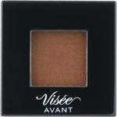
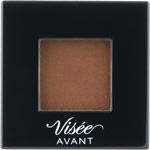

商品の特徴
単色でも組み合わせても。
透明感のあるツヤやかな仕上がりがつづくクリームアイカラー。
まぶたにフィットし、美しい発色が長時間持続します。
アイカラーベースとしても使用できます。
【無香料】
- 成分・分量
- 【成分】
ジメチコン、トリイソステアリン酸ポリグリセリル－２、パルミチン酸デキストリン、エチルヘキサン酸セチル、トリエチルヘキサノイン、（ビニルジメチコン／メチコンシルセルキオキサン）クロスポリマー、ジフェニルシロキシフェニルトリメチコン、ジイソステアリン酸ポリグリセリル－２、合成金雲母、ヘキサ（ヒドロキシステアリン酸／ステアリン酸／ロジン酸）ジペンタエリスリチル、ポリブテン、（アクリレーツ／アクリル酸ベヘニル／メタクリル酸ジメチコン）コポリマー、シリカ、ヒアルロン酸Ｎａ、ＢＨＴ、ジメチルシリル化シリカ、スクワラン、レシチン、酸化スズ、水、フェノキシエタノール、メチルパラベン、グンジョウ、マイカ、酸化チタン、酸化鉄
- 用法及び用量
- 【使用方法】
●指先に適量をとり、まぶたに軽くのばします。
●ご使用後は、ふたをきちんとしめてください。
 
